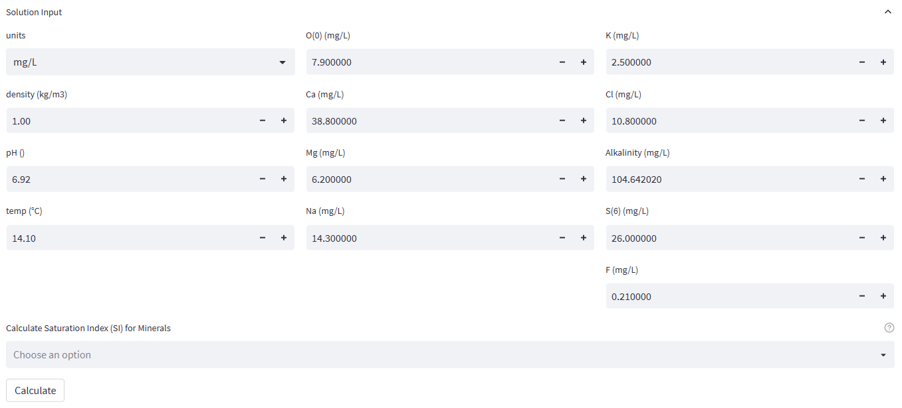
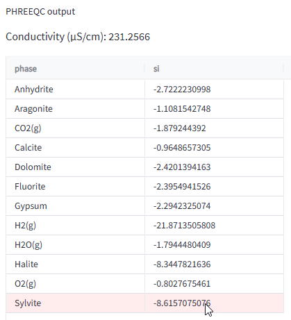

Saturation index
Introduction
The Mineral Saturation Index (SI) is a measure of the saturation state of an aqueous solution with respect to specific minerals. It is calculated by comparing the product of the ion activities of the ions that form a mineral, called the Ion Activity Product (IAP), with the solubility product constant (Ksp) of that mineral. If the IAP is equal to the Ksp, the solution is said to be at saturation with respect to that mineral, and the SI is equal to zero. If the IAP is less than the Ksp, the solution is undersaturated with respect to that mineral, and the SI is negative. Conversely, if the IAP is greater than the Ksp, the solution is supersaturated with respect to that mineral, and the SI is positive.
The SI is an important concept in water quality and soil science, as it provides information on the potential for mineral precipitation or dissolution in a solution. For example, high SI values can indicate a potential for mineral precipitation, which can cause scaling or clogging of irrigation systems, while low SI values can indicate a potential for mineral dissolution, which can lead to soil degradation.
By knowing the SI of a solution, water managers and soil scientists can make informed decisions about water quality and soil management, helping to maintain the long-term productivity and sustainability of soil and water resources(Source: OpenAI GPT-3, 2023).
Fontus uses the geochemical modeling software PHREEQC for all SI calculations as outlined below.
PHREEQC Engine
PHREEQC is a widely used geochemical modeling software for calculating mineral solubility. Fontus interfaces with PHREEQC by sending user-specified concentrations and minerals to the software, which then converts them into ion activities and calculates the Ion Activity Product (IAP). The IAP is compared to the temperature-dependent solubility product, and the resulting Mineral Saturation Index (SI) is returned to the graphical user interface. To ensure accurate results, it is important that the required parameters are included in the dataset and correctly mapped to the PHREEQC master species, as described in Chapter PHRREEQC-Mapping in the data manual.
Calculator Input
If the data source radio selection is set to the options Select sample from the dataset a table is presented with all available samples. Upon selecting a record, Fontus shows the respective concentrations used as input in the PHREEQC model in the form below, where they may be altered or completed. For example, in the example below, no temperature data is available for the samples in the second and third row. However, the temperature is a required parameter for the solubility calculation and a default value of 25°C will be used by PHREEQC if not specfied otherwise. Since data is known from this station, filling in a estimated value, for example by by copying the temperure from a nearby well, will be closer to the actual water temperature and will provide a more realistic SI result.

Calculator Output
"The output of the calculator is contingent upon the minerals that have been selected. If no minerals were chosen, Fontus will return saturation indices for all minerals that can be calculated based on the provided input. For instance, in order to calculate the SI of calcite, the solution must contain inputs for calcium, bicarbonate or alkalinity, and pH. If the user selects specific minerals, only their saturation indices will be displayed, given that the solution contains the necessary components for the calculation.

If the user selects Enter data manually as the datasource, the user must enter all concentrations and other required PHREEQC input parameters manually in the input form.